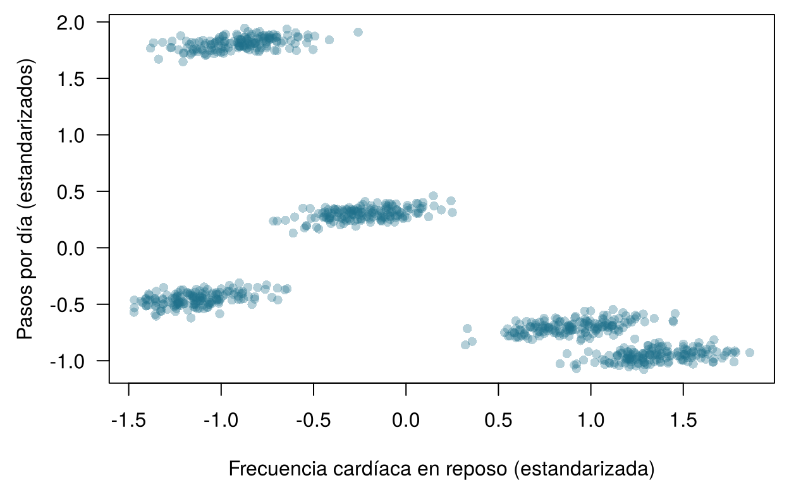
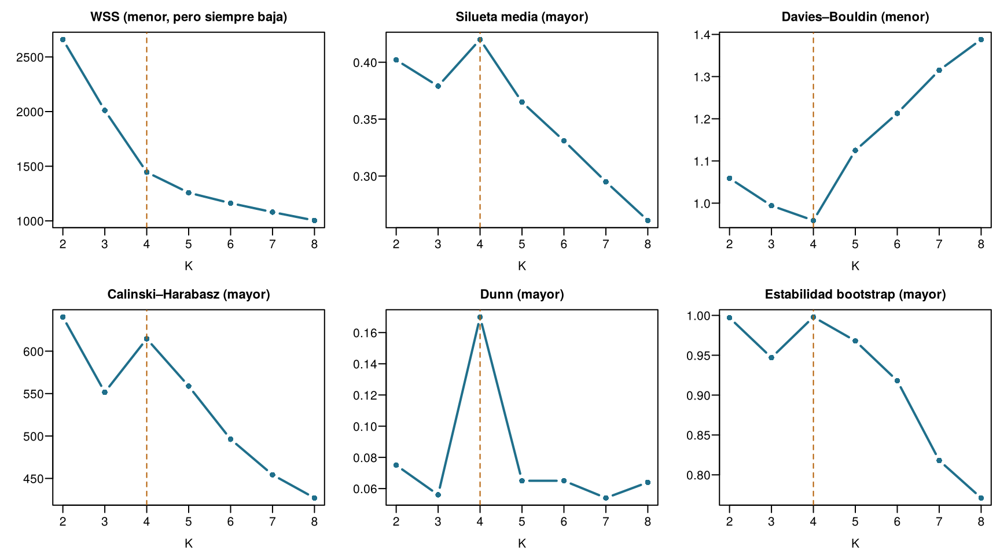
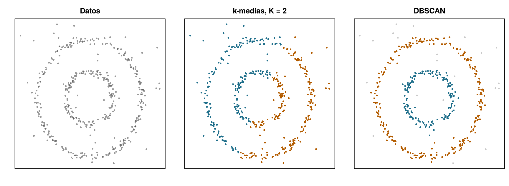
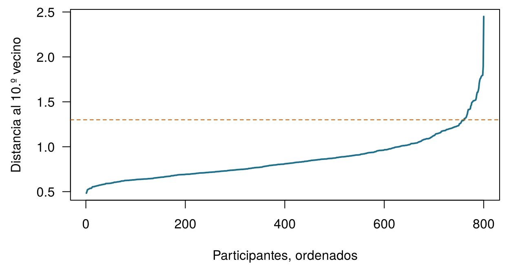
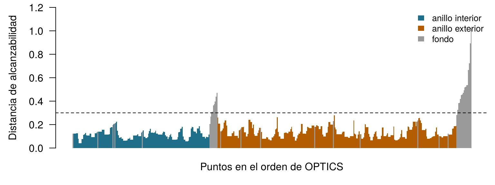
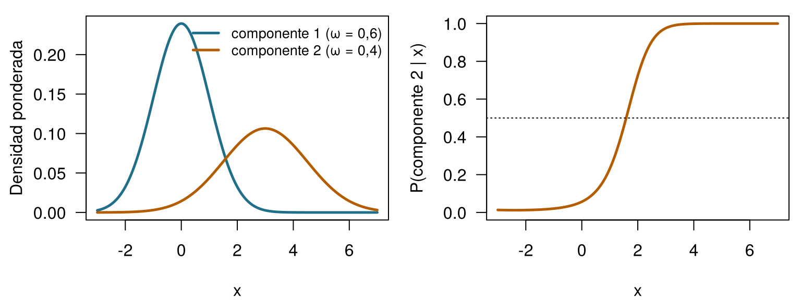

| ID | FC en reposo (lpm) | VFC, SDNN (ms) | Pasos/día | Temp. de la piel (°C) | SpO2 (%) | Eficiencia del sueño | Fenotipo verdadero |
|---|---|---|---|---|---|---|---|
| W001 | 62.76 | 80.89 | 11861 | 33.69 | 98.15 | 0.95 | healthy_active |
| W002 | 62.57 | 94.25 | 11992 | 32.25 | 98.14 | 0.92 | healthy_active |
| W003 | 58.01 | 77.88 | 11827 | 32.12 | 98.66 | 1.14 | healthy_active |
| W004 | 55.17 | 77.05 | 11715 | 31.82 | 97.76 | 0.94 | healthy_active |
| W005 | 61.49 | 72.71 | 11917 | 32.25 | 97.82 | 1.00 | healthy_active |
| W006 | 59.90 | 67.43 | 12037 | 31.94 | 98.11 | 0.99 | healthy_active |
11 Agrupar pacientes
El agrupamiento es no supervisado: funciona sin desenlaces conocidos. Para cada pregunta de abajo, decide si necesita etiquetas (un desenlace registrado para casos anteriores, como en el aprendizaje supervisado) o si puede abordarse con agrupamiento (sin ningún desenlace). Arriesga tu mejor respuesta: el capítulo explica la diferencia en la práctica.
| Pregunta | Tu respuesta |
|---|---|
| Predecir si un participante de HomeBeat tendrá un evento de deterioro, aprendiendo de participantes anteriores cuyos eventos se registraron. | |
| Agrupar a 800 usuarios de reloj inteligente según los perfiles de sus señales diarias, sin ningún diagnóstico asociado. | |
| Buscar subtipos moleculares entre 60 tumores a partir de la expresión de 300 genes. | |
| Estimar la variación de la creatinina de Aoife a partir de 1250 pacientes de UCI anteriores. | |
| Encontrar familias de lotes de CellWorks con condiciones de proceso parecidas, sin mirar la potencia. |
Cómo usar este capítulo
¿Empiezas aquí?
Este capítulo toma prestadas algunas ideas de los anteriores:
- Cada fila de un conjunto de datos es una instancia con características \(\mathbf{x}_i\) (Definición 1.7). El aprendizaje no supervisado busca estructura en datos que no tienen desenlace (Sección 1.6.2).
- Un modelo demasiado flexible sufre sobreajuste: ajusta ruido que no volverá a aparecer en datos nuevos (Definición 1.8). Los ajustes que elige el analista en lugar de aprenderse, como la \(k\) de los \(k\) vecinos más próximos, son hiperparámetros (Capítulo 3).
- La distribución normal describe mediciones que se dispersan de forma simétrica alrededor de una media, y la verosimilitud mide lo bien que un modelo con unos parámetros dados explica los datos (Capítulo 2).
- La distancia \(d(\mathbf{x}_i, \mathbf{x}_{i'})\) entre dos pacientes suele ser la euclídea; las características se estandarizan (se centran y se dividen por su desviación típica) para que cada una cuente lo mismo; el PCA resume muchas características correlacionadas en unos pocos ejes nuevos, los componentes principales, que conservan tanta variación como sea posible (Capítulo 10).
- Los registros reales tienen valores faltantes, y la forma en que llegaron a faltar importa (Capítulo 9).
| Ejemplo | Quién o qué | Desenlace | Caras que vas a conocer |
|---|---|---|---|
| 1 UCI Sala 7 | 1250 pacientes de UCI en 4 hospitales | variación de la creatinina en 48 h (lesión renal aguda si ≥ 0,3 mg/dL) | Aoife (71 años, sepsis, riesgo limítrofe), Tomás (54 años, riesgo bajo), Priya (38 años, riesgo alto); la Dra. Emma Walsh; Seán, el farmacéutico |
| 2 Ensayo ONCO-1 | 1000 pacientes aleatorizados a quimioterapia o no | reducción del tumor (%) | pacientes #0042 y #0917 |
| 3 HomeBeat | 500 personas que llevan un reloj inteligente en casa | puntuación de estrés, evento de deterioro | Lena |
| 4 CellWorks | 420 lotes de producción de una terapia celular | puntuación de potencia | lote CW-118 |
Los cuatro conjuntos de datos son simulados y pueden descargarse en el apéndice de datos. La presentación completa está en la Sección 1.1.
Además de HomeBeat, este capítulo usa dos conjuntos de datos didácticos descritos en sus propias secciones: una cohorte piloto de 800 usuarios de reloj inteligente y una matriz de 300 valores de expresión génica para 60 pacientes. Ambos son simulados.
Este capítulo trata de encontrar grupos cuando nadie te ha dicho cuáles son. Tiene diez secciones y un Laboratorio, ocho comprobaciones rápidas, tres widgets “Pruébalo”, un desafío y tres misiones de programación en R y Python. Calcula unas dos horas. Todo lo que hay en los widgets se ejecuta en tu navegador; los análisis más lentos se ejecutaron una vez y sus resultados se cargan desde archivos.
La notación de un vistazo (solo para consulta)
| Símbolo | Significado | Sección |
|---|---|---|
| \(K\) | número de clústeres | Sección 11.1 |
| \(C_k\), \(n_k\) | el clúster \(k\) y el número de instancias que contiene | Sección 11.1 |
| \(\mathbf{\mu}_k\) | centroide (vector de medias) del clúster \(k\) | Sección 11.1 |
| \(g_i\) | etiqueta de clúster de la instancia \(i\), un número de 1 a \(K\) | Sección 11.3 |
| WSS, BSS | sumas de cuadrados dentro de los clústeres y entre ellos | Sección 11.3 |
| \(s(i)\) | silueta de la instancia \(i\) | Sección 11.4 |
| ARI | índice de Rand ajustado | Sección 11.5 |
| \(r\), minPts | radio de la vecindad en DBSCAN (eps en el software) y número mínimo de vecinos |
Sección 11.6 |
| \(\omega_k\), \(\mathbf{\Sigma}_k\) | proporción de mezcla y matriz de covarianza del componente \(k\) | Sección 11.7 |
La lista completa está en la página de notación. \(K\) se usa solo para los clústeres; el número de particiones (folds) de la validación cruzada es \(V\).
11.1 ¿Qué es un clúster?
Definición 11.1 (Clúster y agrupamiento) Un clúster es un grupo de instancias más parecidas entre sí que a las instancias de otros grupos, según una medida de similitud declarada. El agrupamiento (clustering) es la tarea de encontrar esos grupos en datos que no llevan etiquetas de desenlace. Una partición asigna cada instancia a exactamente uno de \(K\) clústeres \(C_1, \dots, C_K\), con \(n_k\) instancias en \(C_k\).
Fíjate en la expresión según una medida declarada. No existe una definición única, independiente del método, de un clúster “verdadero”: un grupo evidente según una noción de similitud puede desaparecer según otra (Hennig 2015). Cada método de agrupamiento de este capítulo hace su propia elección (grupos redondeados alrededor de un centro, regiones densas separadas por regiones dispersas, curvas en forma de campana que se solapan, un árbol de fusiones anidadas) y encuentra grupos de ese tipo.
Los métodos de agrupamiento proceden de dos grandes perspectivas. Los métodos planos (de partición) buscan una única partición en un número elegido de grupos \(K\); el \(k\)-medias (\(k\)-means), el \(k\)-medoides y las mezclas gaussianas son de este tipo. Los métodos jerárquicos no se comprometen con un único \(K\): construyen un árbol de grupos anidados, desde cada paciente por separado hasta todos juntos, que puede cortarse a cualquier nivel. Empezamos por los planos y terminamos con los árboles.
Muchos métodos planos resumen un clúster mediante un punto representativo.
Definición 11.2 (Centroide y medoide) El centroide del clúster \(C_k\) es la media de sus miembros, \(\mathbf{\mu}_k = \frac{1}{n_k}\sum_{i \in C_k} \mathbf{x}_i\): la media coordenada a coordenada, un punto sintético que no tiene por qué coincidir con ningún paciente real. El medoide es el miembro del clúster con la menor distancia media a todos los demás miembros: siempre un paciente real.
El centroide es al medoide lo que la media es a la mediana. Una sola lectura defectuosa de un sensor, de 40 000 pasos, arrastra el centroide hacia ella; un medoide, anclado a una persona real, apenas se mueve. Esa robustez explica por qué el \(k\)-medoides (Kaufman y Rousseeuw 1990) es popular con datos clínicos desordenados, a un coste computacional mayor.
Ejecutas un algoritmo de agrupamiento sobre el piloto de HomeBeat y pides cuatro clústeres. Devuelve cuatro grupos. ¿Qué has aprendido?
11.2 La cohorte piloto y sus seis señales
El conjunto de datos del piloto tiene una fila por participante, que resume varias semanas de datos del reloj.
Los datos se simularon con cinco fenotipos digitales de 160 personas cada uno: sano activo (frecuencia cardíaca baja, muchos pasos), estrés alto (frecuencia cardíaca rápida, variabilidad de la frecuencia cardíaca baja, pocos pasos), sedentario tranquilo (frecuencia cardíaca lenta, pocos pasos), fiebre o infección (piel caliente, saturación de oxígeno más baja) y posoperatorio (la frecuencia cardíaca más rápida y casi ningún paso). En la monitorización remota real nadie conoce los fenotipos, y quizá no existan. Aquí los conocemos, y eso nos permite hacer algo que rara vez es posible en la práctica: comprobar qué acierta y qué falla cada método. La eficiencia del sueño es la fracción del tiempo en la cama que se pasa durmiendo; la simulación deja que algunos valores superen 1 (124 de los 800), un recordatorio de que los datos simulados son un recurso didáctico, no un espejo de la realidad.
11.2.1 Preparar los datos: una sola escala para todas
El agrupamiento se guía por las distancias entre pacientes (Capítulo 10). Los pasos se cuentan por miles, la temperatura de la piel varía un par de grados y la eficiencia del sueño está entre 0 y 1. En las escalas originales, la distancia euclídea entre dos participantes es casi por completo una diferencia de pasos, y las otras cinco señales se ignoran. El remedio habitual es estandarizar cada característica a media 0 y desviación típica 1 antes de agrupar (Kaufman y Rousseeuw 1990, cap. 1). Ten en cuenta que esta es una decisión de modelado, no un paso neutro: decide cuánto puede pesar cada señal (Hastie, Tibshirani, y Friedman 2009, cap. 14). Veremos cómo vuelve para darnos problemas.

Ejecutas el \(k\)-medias sobre los datos del piloto sin estandarizar. ¿Qué señal dominará los clústeres?

La Figura 11.2 muestra el flujo de trabajo que seguimos. A diferencia del aprendizaje supervisado, no hay desenlace que predecir ni error de prueba que comunicar, así que la última caja, validar, carga con la mayor parte del peso.
11.3 \(k\)-medias
El método de agrupamiento más antiguo y más utilizado descansa sobre una intuición: si existen grupos, debería haber centros alrededor de los cuales se reúnen los pacientes. El \(k\)-medias busca \(K\) centroides, y una asignación de cada paciente a uno de ellos, que hagan los clústeres lo más compactos posible. La compacidad se mide con la suma de cuadrados dentro de los clústeres (within-cluster sum of squares),
\[ \text{WSS} = \sum_{k=1}^{K} \sum_{i \in C_k} \lVert \mathbf{x}_i - \mathbf{\mu}_k \rVert^2 , \qquad(11.1)\]
la distancia al cuadrado total de cada paciente al centroide de su clúster. El nombre se remonta a MacQueen (1967); el algoritmo clásico para minimizar la WSS se debe a Lloyd (1982), que lo describió en 1957 para el procesamiento de señales.
Definición 11.3 (\(k\)-medias (algoritmo de Lloyd)) Elige \(K\) y coloca \(K\) centroides iniciales (por ejemplo, sobre \(K\) pacientes elegidos al azar). Después repite dos pasos hasta que ningún paciente cambie de clúster:
- Asignar: da a cada paciente la etiqueta \(g_i\) del centroide más próximo.
- Actualizar: mueve cada centroide a la media de los pacientes asignados ahora a él.
Ninguno de los dos pasos puede aumentar la WSS, así que el algoritmo siempre se detiene, pero en un mínimo local que depende de los centroides iniciales.
Geométricamente, los centroides dividen el espacio de características en celdas de Voronoi: cada celda es la región más próxima a su centroide que a cualquier otro. El paso de asignación deja caer a cada paciente en su celda; el paso de actualización mueve los centroides, y las paredes de las celdas se mueven con ellos. La convergencia es el momento en que las paredes dejan de moverse. Pruébalo.
Recorre el \(k\)-medias paso a paso. Los puntos son los 800 participantes del piloto, mostrados en dos de las seis señales (frecuencia cardíaca y pasos estandarizados); aquí el \(k\)-medias usa solo estas dos. Pulsa Siguiente paso para alternar asignar y actualizar, observa cómo cae la WSS en cada paso y llévalo hasta la convergencia. Después pulsa Nuevo inicio aleatorio, o cambia \(K\), y compara. Activa Colorear por fenotipo verdadero para ver lo que nunca se le dijo al algoritmo. Objetivo: llevar un inicio hasta la convergencia.
Merece la pena fijarse en cuatro cosas. Los primeros pasos mueven mucho los centroides, y los últimos apenas nada. La WSS nunca sube. Inicios aleatorios distintos pueden terminar en soluciones distintas con WSS distintas: un mal inicio puede dejar a dos centroides compartiendo un mismo cúmulo mientras otro centroide queda a caballo entre dos. Y con \(K = 5\) y un buen inicio, la versión con dos señales separa la banda de frecuencia cardíaca alta en los dos fenotipos que revelan los colores verdaderos (un ARI de alrededor de 0,9). Guarda esta última observación: con las seis señales, no ocurrirá.
La defensa habitual contra los malos inicios es ejecutar el algoritmo desde muchos inicios y quedarse con la solución de menor WSS (nstart = 20 en R, n_init en scikit-learn). Una inicialización más inteligente, el \(k\)-means++, dispersa los centroides iniciales eligiendo cada uno nuevo con probabilidad proporcional a su distancia al cuadrado a los ya elegidos (Arthur y Vassilvitskii 2007). scikit-learn la usa por defecto; la función kmeans() de R no: parte de filas elegidas al azar.
Tres algoritmos, un objetivo: Lloyd, MacQueen y Hartigan–Wong
Los tres minimizan la misma WSS; difieren en cómo mueven los centroides (Rhys 2020, cap. 16).
| Algoritmo | Cómo actualiza | Observaciones | En kmeans() de R |
|---|---|---|---|
| Lloyd (por lotes) | asigna a todos y después recalcula todos los centroides | sencillo; es el del widget | algorithm = "Lloyd" |
| MacQueen (en línea) | tras la primera pasada, visita a los pacientes uno a uno y mueve de inmediato los dos centroides afectados cada vez que un paciente cambia de clúster | adecuado para datos que llegan como un flujo; depende del orden de las filas | algorithm = "MacQueen" |
| Hartigan–Wong | mueve a un paciente a otro clúster siempre que eso reduzca la WSS total, aunque el nuevo centroide no sea el más próximo (Hartigan y Wong 1979) | suele alcanzar la WSS más baja; es el predeterminado de R | algorithm = "Hartigan-Wong" |
En los datos del piloto los tres dan particiones prácticamente idénticas, así que la elección del algoritmo importa mucho menos que la elección de \(K\) y de las características.
La variación total de los datos estandarizados se divide en dos partes, exactamente como en un análisis de la varianza:
\[ \underbrace{\sum_{i=1}^{n} \lVert \mathbf{x}_i - \bar{\mathbf{x}} \rVert^2}_{\text{total}} = \underbrace{\sum_{k=1}^{K}\sum_{i \in C_k} \lVert \mathbf{x}_i - \mathbf{\mu}_k \rVert^2}_{\text{WSS}} + \underbrace{\sum_{k=1}^{K} n_k \lVert \mathbf{\mu}_k - \bar{\mathbf{x}} \rVert^2}_{\text{BSS}} , \qquad(11.2)\]
donde \(\bar{\mathbf{x}}\) es la media global y BSS es la suma de cuadrados entre clústeres (between-cluster sum of squares). Como el total es fijo, hacer compactos los clústeres (WSS pequeña) equivale a alejar sus centroides (BSS grande).
En las seis señales estandarizadas, la WSS es 2659,8 con \(K = 2\) y 1004,1 con \(K = 8\). ¿Deberías elegir el \(K\) con la WSS más pequeña?
11.4 ¿Cuántos clústeres? Índices internos y estabilidad
\(K\) es un hiperparámetro, y elegirlo es la decisión de modelado central del \(k\)-medias. Demasiado pocos clústeres producen infraajuste: estados distintos quedan mezclados. Demasiados producen sobreajuste: un grupo genuino se trocea en fragmentos que no volverían a aparecer en datos nuevos. Sin etiquetas, nos apoyamos en dos tipos de evidencia.
Definición 11.4 (Índice de validación interna) Un índice interno puntúa una partición usando solo los datos y las etiquetas de los clústeres, equilibrando lo compactos que son los clústeres con lo separados que están. Comparar el índice entre valores de \(K\) sugiere qué \(K\) se ajusta mejor a los datos, según la propia noción que el índice tiene de un buen clúster.
Hay cuatro índices de uso común.
- Silueta (Rousseeuw 1987). Para el paciente \(i\), sea \(\bar d_{\text{propio}}(i)\) la distancia media a los demás miembros de su clúster y \(\bar d_{\text{vecino}}(i)\) la distancia media a los miembros del clúster distinto más próximo. Entonces \[ s(i) = \frac{\bar d_{\text{vecino}}(i) - \bar d_{\text{propio}}(i)}{\max\{\bar d_{\text{propio}}(i),\ \bar d_{\text{vecino}}(i)\}} , \qquad(11.3)\] que está entre −1 y 1: cerca de 1 cuando \(i\) encaja cómodamente en su clúster, cerca de 0 cuando está en una frontera, negativo cuando encajaría mejor en el de al lado. La silueta media resume una partición; cuanto más alta, mejor.
- Davies–Bouldin (Davies y Bouldin 1979). Para cada clúster, toma el peor cociente entre (su dispersión + la dispersión de un vecino) y la distancia entre sus centroides, y después promedia sobre los clústeres. Cuanto más bajo, mejor.
- Calinski–Harabasz (pseudo-F) (Caliński y Harabasz 1974): \(\text{CH} = \dfrac{\text{BSS}/(K-1)}{\text{WSS}/(n-K)}\), el cociente al estilo del ANOVA de la
- Cuanto más alto, mejor.
- Dunn (Dunn 1973): la menor distancia entre dos pacientes de clústeres distintos dividida por la mayor distancia entre dos pacientes del mismo clúster. Mira el peor caso, así que un solo valor atípico puede hundirlo. Cuanto más alto, mejor.
Un segundo tipo de evidencia es la estabilidad (Hennig 2007): una estructura de clústeres real debería reaparecer cuando se perturban los datos. Extraemos muestras bootstrap de los 800 participantes, volvemos a ejecutar el \(k\)-medias en cada una, asignamos a todos al centroide bootstrap más próximo y medimos la concordancia con la partición original (con el índice de Rand ajustado que se presenta en la siguiente sección; 1 = idénticas). También se puede tomar prestada la lógica de la validación cruzada: ajustar los clústeres en algunas particiones y calcular los índices en los participantes reservados, de modo que \(K\) se juzgue en personas que el agrupamiento nunca vio (Rhys 2020, cap. 16).

El veredicto parece unánime (Figura 11.3). La silueta alcanza su máximo en \(K = 4\), Davies–Bouldin es mínimo en \(K = 4\), Dunn alcanza su máximo en \(K = 4\), y la solución de cuatro clústeres es la más estable (0,998). Solo Calinski–Harabasz discrepa, y prefiere \(K = 2\), con cuatro en un segundo puesto muy cercano. Una analista cuidadosa comunicaría cuatro fenotipos digitales, y tendría buenos motivos para sentirse segura.
Y se equivocaría: los datos se generaron con cinco.
11.5 ¿Cuatro o cinco? El índice de Rand ajustado
Cuando existen etiquetas verdaderas (en una simulación, o cuando los clústeres se comparan con una clasificación establecida), podemos medir lo bien que una partición las recupera. Los números de los clústeres son arbitrarios (el clúster 2 de una ejecución puede ser el clúster 4 de la siguiente), así que no basta con contar las etiquetas que coinciden. En su lugar miramos pares de pacientes: una buena partición junta los pares que deben ir juntos y separa los que no.
Definición 11.5 (Índice de Rand ajustado (ARI)) Considera todos los \(\binom{n}{2}\) pares de instancias. El índice de Rand es la proporción de pares en los que dos particiones coinciden (ambas juntan el par, o ambas lo mantienen separado). El índice de Rand ajustado (adjusted Rand index) lo corrige por la concordancia esperada por azar (Hubert y Arabie 1985): \[ \text{ARI} = \frac{\text{índice de Rand} - \text{índice de Rand esperado}}{\text{índice de Rand máximo} - \text{índice de Rand esperado}} . \] ARI = 1 para particiones idénticas (sean cuales sean los nombres de las etiquetas), alrededor de 0 para una partición que no es mejor que el azar, y puede ser ligeramente negativo.
Esta es la solución de cuatro clústeres puesta frente a la verdad.
| cluster | sano activo | estrés alto | posoperatorio | sedentario tranquilo | fiebre/infección |
|---|---|---|---|---|---|
| 1 | 160 | 0 | 0 | 0 | 0 |
| 2 | 0 | 158 | 160 | 0 | 0 |
| 3 | 0 | 2 | 0 | 160 | 0 |
| 4 | 0 | 0 | 0 | 0 | 160 |
Tres fenotipos salen limpios. Los participantes con estrés alto y los posoperatorios, ambos con frecuencia cardíaca rápida y pocos pasos, acaban en un único clúster grande. El ARI es 0,779. ¿Seguro que decirle al \(k\)-medias el número correcto lo arregla?
| cluster | sano activo | estrés alto | posoperatorio | sedentario tranquilo | fiebre/infección |
|---|---|---|---|---|---|
| 1 | 160 | 0 | 0 | 0 | 0 |
| 2 | 0 | 110 | 87 | 0 | 0 |
| 3 | 0 | 0 | 0 | 159 | 0 |
| 4 | 0 | 0 | 0 | 0 | 159 |
| 5 | 0 | 50 | 73 | 1 | 1 |
No lo arregla (Tabla 11.3). Con \(K = 5\) el grupo fundido se divide, pero por la línea equivocada: cada uno de los dos clústeres resultantes es una mezcla de ambos fenotipos, y el ARI baja a 0,750. No es mala suerte con los inicios: la partición en los cinco fenotipos verdaderos tiene una WSS de 1381,3, mayor que los 1257,8 de la solución del \(k\)-medias. Con la vara de medir del propio \(k\)-medias, la verdad es una respuesta peor.
¿Por qué? Mira lo dispersos que están los fenotipos en cada señal estandarizada (la desviación típica media dentro de cada fenotipo; la cohorte completa tiene 1 en todas las señales):
| Señal | DT dentro del fenotipo | |
|---|---|---|
| HR_mean | FC en reposo | 0.199 |
| HRV_sdnn | VFC | 0.448 |
| steps_mean | Pasos | 0.056 |
| skin_temp | Temperatura de la piel | 0.633 |
| spo2 | SpO2 | 0.552 |
| sleep_eff | Eficiencia del sueño | 0.884 |
Los fenotipos son “tortitas” aplanadas: finísimos en los pasos (0,056) y anchos en la eficiencia del sueño (0,884). Los grupos de estrés alto y posoperatorio difieren sobre todo en los pasos: unos 1000 al día, una distancia enorme en relación con su propia dispersión, pero pequeña después de estandarizar por la dispersión de toda la cohorte. El \(k\)-medias supone clústeres redondos de tamaño parecido y corta donde las nubes son más anchas, no donde está la separación real. En el widget, solo con la frecuencia cardíaca y los pasos, la separación era visible y el \(k\)-medias la encontró; las cuatro señales adicionales, anchas dentro de todos los fenotipos y sin información sobre estos dos grupos, añaden dispersión en otras direcciones que la ahoga. Elegir qué características entran en la distancia es una decisión de modelado tanto como elegir \(K\). Los índices internos comparten la geometría del \(k\)-medias, así que coincidieron entre sí, y con su error.
La lección
Los índices internos y la estabilidad miden lo bien que los datos se ajustan a la idea de clúster que tiene el propio método. No pueden decirte si los clústeres son reales. Cuatro índices concordantes y una solución estable sumaron una respuesta segura, reproducible y equivocada. De ahí se siguen dos remedios, y el resto del capítulo usa ambos: probar métodos con nociones distintas de clúster y, sobre todo, validar los clústeres con conocimiento que el algoritmo no vio.
Un colega agrupa a 100 pacientes en tres grupos etiquetados 1, 2, 3. Los subtipos verdaderos son A, B, C, y todos los pacientes A están en el clúster 3, todos los B en el clúster 1 y todos los C en el clúster 2. ¿Cuál es el ARI?
Dale al \(k\)-medias el número verdadero. Los datos del piloto están cargados como wear, con los nombres de las seis señales en vars, y hay una función ari() que calcula el índice de Rand ajustado. Estandariza las señales, ejecuta el \(k\)-medias con el número verdadero de fenotipos y mide su concordancia con los fenotipos verdaderos.
Los datos se simularon con cinco fenotipos de 160 personas cada uno.
km <- kmeans(X, centers = 5, nstart = 20)Los datos se simularon con cinco fenotipos de 160 personas cada uno.
km = KMeans(n_clusters=5, n_init=20, random_state=2025).fit(X)En los datos reales no hay ninguna columna phenotype_true. ¿Qué nos habría puesto sobre aviso? Mirar cada señal en su propia escala (un histograma de los pasos entre los participantes con frecuencia cardíaca rápida muestra dos jorobas separadas); preguntar a los clínicos si “frecuencia cardíaca rápida, ningún paso” mezcla a personas que deberían tratarse de forma distinta; y ajustar un método cuyos clústeres puedan ser alargados, que es lo que hacemos en la Sección 11.7.
11.5.1 Puntos fuertes y límites del \(k\)-medias
El \(k\)-medias es rápido, escala a millones de filas, es fácil de explicar y sus centroides son resúmenes legibles: un centroide a +1,8 desviaciones típicas en los pasos y a −0,9 en la frecuencia cardíaca es el perfil sano activo. Sus límites se derivan de su objetivo. Necesita \(K\) de antemano; solo funciona con características numéricas (las categorías como el tipo de dispositivo o el diagnóstico requieren otros métodos, como el \(k\)-medoides con una disimilitud adecuada); depende de la escala; su resultado depende de los inicios; unos pocos valores atípicos desplazan los centroides; y favorece clústeres redondos de tamaño parecido. Además asigna a cada paciente a algún clúster, por inusual que sea el paciente.
11.6 Agrupamiento basado en la densidad: DBSCAN y OPTICS
Los métodos basados en la densidad adoptan otro punto de vista: un clúster es una región donde los pacientes se apiñan, separada de otras regiones parecidas por espacio poco poblado. Los clústeres pueden tener entonces cualquier forma, y un paciente que vive en una región vacía no tiene por qué pertenecer a ningún clúster. En la monitorización remota, eso suele ser exactamente lo que queremos: un episodio inusual o un sensor defectuoso debe señalarse, no meterse a la fuerza en el grupo más próximo.
Definición 11.6 (DBSCAN) El DBSCAN (density-based spatial clustering of applications with noise, agrupamiento espacial basado en la densidad de aplicaciones con ruido) (Ester et al. 1996) usa dos hiperparámetros, un radio \(r\) (llamado eps en el software) y un recuento minPts. Un punto núcleo (core point) tiene al menos minPts puntos, incluido él mismo, a una distancia no mayor que \(r\). Un punto frontera tiene menos, pero está a una distancia no mayor que \(r\) de un punto núcleo. Todos los demás puntos son ruido. Un clúster crece a partir de un punto núcleo añadiendo todo lo que está a una distancia no mayor que \(r\) de él, después todo lo que está a esa distancia de cada nuevo punto núcleo, y así sucesivamente, hasta que no se puede alcanzar nada más.
La demostración clásica usa formas que derrotan al \(k\)-medias. Abajo, 150 puntos forman un anillo interior, 260 un anillo exterior, y 40 están dispersos al azar.

El \(k\)-medias corta el plano en dos mitades, cada una con trozos de ambos anillos (ARI en los puntos de los anillos de 0,008, no mejor que el azar). DBSCAN sigue los anillos, porque los puntos vecinos a lo largo de un anillo se van pasando el clúster de uno a otro, y deja 21 de los puntos dispersos como ruido. Ahora encuentra tú unos buenos ajustes.
Ajusta DBSCAN a mano. Mueve el radio \(r\) y minPts. Las cruces grises son ruido; los círculos huecos son puntos frontera. Observa qué pasa cuando \(r\) es demasiado pequeño (los anillos se rompen en fragmentos y mucho pasa a ser ruido) y demasiado grande (los anillos se funden entre sí y con el fondo). Objetivo: exactamente dos clústeres que recuperen los dos anillos (ARI en los puntos de los anillos ≥ 0,95).
11.6.1 Elegir \(r\) y minPts
Dos hábitos ayudan. Primero, estandariza las características, para que un mismo radio signifique lo mismo en todas las direcciones. Segundo, fija minPts (son habituales valores entre 5 y 15; mayores para datos más grandes o de dimensión más alta) y dibuja un gráfico de distancias al \(k\)-ésimo vecino más próximo: para cada paciente, la distancia a su minPts-ésimo vecino más próximo, ordenada de menor a mayor. Los pacientes dentro de regiones densas tienen valores pequeños, los de regiones poco pobladas valores grandes, y el “codo” donde la curva se dobla hacia arriba sugiere un radio (Ester et al. 1996; Hahsler, Piekenbrock, y Doran 2019). En muchas dimensiones todas las distancias se vuelven parecidas (Capítulo 10), la densidad es difícil de estimar y DBSCAN se vuelve frágil.

Calcula tú las distancias al \(k\)-ésimo vecino más próximo. X contiene las seis señales estandarizadas y d la matriz de distancias entre todos los pares de participantes. Para cada participante, extrae la distancia a su 10.º vecino más próximo y después indica el percentil 95 de esas distancias. Cuidado: cada participante está a distancia 0 de sí mismo.
sort(row)[1] es siempre 0: la distancia del participante a sí mismo.
knn10 <- apply(d, 1, function(row) sort(row)[11])La columna 0 de cada fila ordenada es 0 (el propio participante), y Python cuenta desde 0.
knn10 = np.sort(d, axis=1)[:, 10]¿Qué tal funciona DBSCAN en la cohorte piloto? La Tabla 11.5 lo ejecuta sobre las seis señales estandarizadas con minPts = 10 y varios radios.
| Radio r | Clústeres | Puntos de ruido | ARI con la verdad |
|---|---|---|---|
| 0.6 | 8 | 527 | 0.060 |
| 0.8 | 4 | 152 | 0.562 |
| 1.0 | 4 | 32 | 0.739 |
| 1.1 | 4 | 16 | 0.761 |
| 1.2 | 4 | 11 | 0.769 |
| 1.3 | 4 | 3 | 0.778 |
| 1.4 | 2 | 3 | 0.209 |
| 1.5 | 2 | 2 | 0.209 |
| 1.6 | 2 | 0 | 0.210 |
Los radios pequeños dejan a cientos de participantes como ruido. Cerca del codo (\(r\) de 1,1 a 1,3) DBSCAN encuentra cuatro clústeres, con un puñado de puntos de ruido y un ARI de alrededor de 0,78; un radio mayor funde más grupos. Aquí DBSCAN tiene el mismo punto ciego que el \(k\)-medias, por un motivo distinto: los participantes con estrés alto y los posoperatorios están conectados por una cadena ininterrumpida de vecindades densas, así que la densidad no puede separarlos. Los pocos puntos de ruido, en cambio, son una ventaja genuina: son los participantes que merecen una segunda mirada.
11.6.2 OPTICS: la densidad en varias escalas
DBSCAN usa un único radio en todas partes, pero los clústeres reales a menudo difieren en densidad: un grupo posoperatorio compacto junto a un grupo sedentario difuso. OPTICS (ordering points to identify the clustering structure, ordenar puntos para identificar la estructura de agrupamiento) (Ankerst et al. 1999) evita comprometerse con un único radio. Visita los puntos en un orden que mantiene juntas las vecindades densas y registra, para cada punto, una distancia de alcanzabilidad (reachability distance): a grandes rasgos, lo grande que tendría que ser \(r\) para que ese punto se alcanzara desde los puntos visitados antes que él. Representados en el orden de visita, los clústeres densos aparecen como valles y las regiones poco pobladas como picos (Figura 11.7). Cortar el gráfico con una línea horizontal a la altura \(r\) recupera el agrupamiento de DBSCAN con ese radio; una sola ordenación sirve para todos los radios a la vez.

En la cohorte piloto, OPTICS con minPts = 10, cortado en \(r = 1{,}3\), vuelve a dar 4 clústeres y 3 puntos de ruido: nada sorprendente, puesto que el corte reproduce DBSCAN con ese radio. Su valor está en el propio gráfico, que muestra de un vistazo si los datos tienen una sola escala natural de densidad o varias.
DBSCAN etiqueta como ruido a 16 de los 800 participantes del piloto. ¿Qué deberían hacer las enfermeras con ellos?
11.7 Mezclas gaussianas: clústeres blandos
Hasta ahora, cada paciente ha pertenecido exactamente a un clúster, sin matices: es el agrupamiento duro (hard clustering). La fisiología rara vez es tan ordenada. Un participante puede estar entre “estrés alto” y “posoperatorio”, y sería más honesto decir 70 % uno, 30 % el otro. Los modelos de mezcla lo hacen posible al tratar los datos como generados por varias distribuciones de probabilidad que se solapan, una por clúster.
Definición 11.7 (Modelo de mezcla gaussiana (GMM)) Un modelo de mezcla gaussiana supone que cada instancia procede de uno de \(K\) componentes; el componente \(k\) se elige con probabilidad \(\omega_k\) (las proporciones de mezcla, que suman 1) y genera \(\mathbf{x}\) a partir de una distribución normal multivariante con media \(\mathbf{\mu}_k\) y matriz de covarianza \(\mathbf{\Sigma}_k\): \[ p(\mathbf{x}) = \sum_{k=1}^{K} \omega_k \, \mathcal{N}(\mathbf{x} \mid \mathbf{\mu}_k, \mathbf{\Sigma}_k) . \qquad(11.4)\] La media es el centro del componente; la matriz de covarianza fija su forma (redonda o alargada), su orientación y su volumen.
Definición 11.8 (Asignación blanda) Para cada instancia, un modelo de mezcla da la probabilidad a posteriori de pertenencia \(P(g_i = k \mid \mathbf{x}_i)\) para cada componente \(k\), mediante el teorema de Bayes (Capítulo 2) con los \(\omega_k\) como probabilidades a priori y las densidades normales como verosimilitudes. Asignar cada instancia a su componente más probable da una partición dura; \(1 - \max_k P(g_i = k \mid \mathbf{x}_i)\) mide lo incierta que es esa asignación.

Los parámetros se estiman por máxima verosimilitud con el algoritmo EM (Dempster, Laird, y Rubin 1977), que se parece notablemente al \(k\)-medias:
- Paso E (esperanza): con los parámetros actuales, calcula las probabilidades de pertenencia de cada paciente: un paso de asignación blando.
- Paso M (maximización): vuelve a estimar \(\omega_k\), \(\mathbf{\mu}_k\) y \(\mathbf{\Sigma}_k\) de cada componente, ponderando a cada paciente por su probabilidad de pertenencia: un paso de actualización ponderado.
Los dos pasos se repiten hasta que la verosimilitud deja de aumentar. Igual que el \(k\)-medias, EM puede detenerse en un óptimo local, así que se usan varios inicios. De hecho, el \(k\)-medias es un caso límite de un GMM en el que todos los componentes son redondos, con la misma varianza, que tiende a cero, y las asignaciones son duras (Hastie, Tibshirani, y Friedman 2009, sec. 14.3.7).
| \(k\)-medias | Mezcla gaussiana | |
|---|---|---|
| Asignación | dura | blanda (probabilidades) |
| Forma del clúster | redonda, de tamaño parecido | elíptica; la forma, el tamaño y la orientación pueden variar |
| Objetivo | minimizar la WSS | maximizar la verosimilitud |
| Incertidumbre de la asignación de un paciente | no disponible | probabilidades a posteriori |
| Elección de \(K\) | índices internos, estabilidad | los mismos, o un criterio de información como el BIC |
¿Cuán flexibles deben ser las matrices de covarianza? El paquete de R mclust (Scrucca et al. 2016) nombra las opciones con tres letras, para el volumen, la forma y la orientación: EII significa componentes esféricos del mismo tamaño (la geometría del \(k\)-medias), VII esféricos de tamaño variable, EEE elipsoides que comparten la misma matriz de covarianza y VVV una matriz de covarianza libre para cada componente. Cada combinación de modelo y \(K\) se puntúa con el criterio de información bayesiano (BIC) (Schwarz 1978), que premia la verosimilitud y penaliza el número de parámetros; en la convención de mclust, un BIC mayor es mejor.
| Componentes | EII (redondos, iguales) | VII (redondos, variables) | EEE (elipsoide común) | VVV (libre) |
|---|---|---|---|---|
| 2 | -11922.5 | -12204.6 | -10316.5 | -9075.8 |
| 3 | -11257.3 | -11032.9 | -9448.2 | -7752.6 |
| 4 | -10175.7 | -10176.5 | -6588.8 | -6343.2 |
| 5 | -9918.7 | -9933.9 | -5713.7 | -6470.8 |
| 6 | -9876.6 | -9861.5 | -5747.7 | -6666.3 |
| 7 | -9716.4 | -9703.5 | -5776.1 | -6799.0 |
| 8 | -9583.0 | -9586.1 | -5809.6 | -6934.1 |
El BIC elige 5 componentes con una covarianza elipsoidal común (EEE), que es, de hecho, exactamente como se simularon los datos: cinco grupos, una matriz de covarianza común. Su partición recupera los cinco fenotipos con un ARI de 0,997 (Tabla 11.8). Los modelos redondos (EII, VII), la geometría del \(k\)-medias, puntúan mucho peor para todos los \(K\). El GMM tiene éxito porque puede aprender que los fenotipos son finos en los pasos y anchos en la eficiencia del sueño, y por eso los separa por la frontera real.
| cluster | sano activo | estrés alto | posoperatorio | sedentario tranquilo | fiebre/infección |
|---|---|---|---|---|---|
| 1 | 160 | 0 | 0 | 0 | 0 |
| 2 | 0 | 160 | 1 | 0 | 0 |
| 3 | 0 | 0 | 159 | 0 | 0 |
| 4 | 0 | 0 | 0 | 160 | 0 |
| 5 | 0 | 0 | 0 | 0 | 160 |
Las probabilidades de pertenencia están casi todas cerca de 0 o de 1: solo 1 participante tiene una incertidumbre de asignación superior a 0,1. Eso se debe a que los fenotipos simulados, una vez que su forma se modela correctamente, apenas se solapan. En la Sección 11.9 encontraremos un conjunto de datos en el que la pertenencia blanda importa mucho más.
Las mezclas tienen sus propios costes. Una matriz de covarianza libre por componente necesita muchos parámetros (21 por componente con seis características), así que VVV cae fácilmente en el sobreajuste con muestras pequeñas; EM puede converger despacio o hacia óptimos locales malos; y los clústeres solo son tan buenos como el supuesto de normalidad.
Para una participante, un GMM da probabilidades de pertenencia de 0,55 (estrés alto) y 0,45 (posoperatorio). ¿Cuál es la mejor lectura?
11.8 Agrupamiento jerárquico de perfiles de expresión génica
El agrupamiento jerárquico ni siquiera pide \(K\). Construye una familia completa de particiones anidadas y las muestra como un árbol. Lo usamos con otro tipo de datos, típico de la medicina molecular: la expresión de 300 genes en muestras tumorales de 60 pacientes. Los datos se simularon con tres programas moleculares de 20 pacientes cada uno: con predominio del interferón (A_IFN), con predominio inflamatorio (B_Inflam) y metabólico (C_Metab). Como antes, dejamos aparte el subtipo verdadero para comprobar el resultado. Agrupar a los pacientes por sus perfiles de expresión es la forma en que se propusieron por primera vez muchos subtipos moleculares del cáncer (Eisen et al. 1998; Perou et al. 2000).
Definición 11.9 (Agrupamiento jerárquico aglomerativo y dendrograma) El agrupamiento jerárquico aglomerativo empieza con cada instancia como su propio clúster y fusiona repetidamente los dos clústeres más próximos hasta que queda uno solo. La secuencia de fusiones se dibuja como un dendrograma: un árbol cuyas hojas son las instancias y en el que la altura de cada unión es la distancia entre los dos clústeres que fusionó. Cortar el árbol a una altura \(h\) da una partición: las ramas que atraviesan el corte son los clústeres.
Dos elecciones determinan el resultado. La primera es la distancia entre pacientes: la distancia euclídea sobre genes estandarizados compara niveles globales; una distancia de correlación, \(1 - \rho_{ii'}\), con \(\rho_{ii'}\) la correlación entre los perfiles de los dos pacientes, compara patrones de regulación al alza y a la baja con independencia del nivel, y es popular en ómica. La segunda es el enlace (linkage): cómo medir la distancia entre dos clústeres cuando ya contienen varios pacientes (Hastie, Tibshirani, y Friedman 2009, sec. 14.3.12).
| Enlace | Distancia entre dos clústeres | Tiende a dar |
|---|---|---|
| Simple | el par de miembros más próximo | cadenas largas y deshilachadas |
| Completo | el par de miembros más alejado | clústeres compactos de diámetro parecido |
| Promedio | la media sobre todos los pares | un término medio |
| Ward | el aumento de la WSS total que causa su fusión (Ward 1963) | clústeres compactos y equilibrados; una opción predeterminada habitual |
Los métodos divisivos funcionan al revés: empiezan con todos juntos y dividen de forma recursiva; DIANA es el ejemplo clásico (Kaufman y Rousseeuw 1990). Son más lentos, pero pueden revelar primero la división dominante. Explora el árbol.
Corta el árbol. El dendrograma muestra el agrupamiento de Ward de los 60 pacientes (300 genes estandarizados). Debajo de las hojas, la fila de puntos de arriba muestra los clústeres que da tu corte, y la de abajo el subtipo molecular verdadero. Arrastra la altura del corte. Objetivo: encontrar un corte cuyos clústeres coincidan perfectamente con los subtipos (ARI = 1).
Un dendrograma se lee de abajo arriba. Los pacientes unidos muy abajo tienen perfiles muy parecidos; una unión muy arriba junta grupos que difieren mucho. La pista más útil sobre el número de clústeres es un salto vertical largo entre fusiones sucesivas: aquí las últimas fusiones ocurren a alturas de 118,9, 92,6, 32,5 y después 25,9, así que cualquier corte en la amplia franja entre 32,5 y 92,6 da tres clústeres, y esos tres son exactamente los tres subtipos.
| Enlace | ARI, K = 2 | K = 3 | K = 4 | K = 5 | Silueta, K = 3 |
|---|---|---|---|---|---|
| ward.D2 | 0.563 | 1.000 | 0.866 | 0.718 | 0.413 |
| complete | 0.563 | 1.000 | 0.866 | 0.718 | 0.413 |
| average | 0.563 | 1.000 | 0.887 | 0.860 | 0.413 |
| single | 0.563 | 1.000 | 0.975 | 0.951 | 0.413 |
| correlación + average | 0.539 | 0.950 | 0.975 | 0.951 | n/d |
Los datos genómicos son un caso fácil. Todos los enlaces euclídeos recuperan perfectamente los tres subtipos con \(K = 3\), la silueta media es máxima con tres clústeres para todos ellos y la distancia de correlación se queda cerca (Tabla 11.10). A diferencia de la cohorte piloto, aquí la evidencia interna y la verdad coinciden. Los casos fáciles existen; el problema es que, sin etiquetas, no puedes distinguir un caso fácil de uno engañoso mirando solo los índices.

En un dendrograma de pacientes, dos pacientes se unen a una altura de 3 y dos grupos de pacientes se unen a una altura de 90. ¿Qué te dicen las alturas?
Corta el árbol con código. La matriz de expresión de 60 × 300 está cargada como gen (columnas patient_id, subtype y después los genes), junto con la función ari(). El código estandariza los genes y construye un árbol de Ward. Elige el número de clústeres en el que cortarlo para que los clústeres reproduzcan los tres subtipos moleculares.
Se simularon tres programas: interferón, inflamatorio y metabólico.
cl <- cutree(hc, k = 3)Se simularon tres programas: interferón, inflamatorio y metabólico.
cl = fcluster(Z, t=3, criterion="maxclust")Un dendrograma de aspecto convincente puede seguir siendo frágil, sobre todo cuando hay muchos más genes que pacientes. La estabilidad bootstrap también se aplica aquí: remuestrea los pacientes, reconstruye el árbol y comprueba con qué frecuencia reaparece cada clúster; los clústeres que reaparecen menos de alrededor del 60–70 % de las veces merecen desconfianza (Hennig 2007).
¿Qué método encaja mejor en cada situación?
- Un millón de resúmenes diarios de reloj; quieres una partición rápida en un número dado de perfiles compactos. k-medias
- Quieres grupos de cualquier forma, y los días atípicos deben quedar fuera de todos los grupos y señalarse. DBSCAN
- Los fenotipos se solapan, y las enfermeras quieren, para cada participante, la probabilidad de pertenecer a cada grupo. Mezcla gaussiana
- Sesenta tumores; quieres ver cómo se dividen los subtipos en subgrupos más finos, sin fijar el número de antemano. Jerárquico
- Los grupos son alargados e inclinados, de tamaños distintos, y te gustaría un criterio de información para elegir cuántos hay. Mezcla gaussiana
- Células a lo largo de dos trayectorias curvas, en forma de anillo, con restos dispersos entre ellas. DBSCAN
11.9 De vuelta a HomeBeat: clústeres, continuos y Lena
Vuelve al ensayo principal de HomeBeat: 500 participantes con cuatro señales del reloj (frecuencia cardíaca en reposo, variabilidad de la frecuencia cardíaca, temperatura de la piel, actividad) y, a diferencia del piloto, un desenlace registrado: si se produjo un evento de deterioro. Pide al \(k\)-medias tres clústeres de las señales estandarizadas y te los da (Tabla 11.11).
| Clúster | n | FC en reposo | VFC | Temp. de la piel | Actividad | Edad | Tasa de eventos |
|---|---|---|---|---|---|---|---|
| 1 | 164 | 57.0 | 64.6 | 33.61 | 47.3 | 31.5 | 0.555 |
| 2 | 191 | 70.4 | 39.6 | 34.55 | 39.2 | 50.9 | 0.921 |
| 3 | 145 | 83.9 | 20.4 | 35.41 | 29.0 | 67.5 | 1.000 |
Los tres clústeres son ordenados y legibles (tranquilo y activo, intermedio, frecuencia cardíaca rápida con variabilidad baja), y sus tasas de eventos suben del 56% al 100%. Antes de llamarlos fenotipos, considera dos hechos más. La silueta media es baja y simplemente baja a medida que crece \(K\) (0,404 con \(K = 2\), 0,298 con \(K = 3\), 0,219 con \(K = 6\)): no hay ningún \(K\) con el que los datos “encajen” en grupos. Y los clústeres se alinean con la edad (media de 31,5, 50,9 y 67,5 años): dividir a los participantes en tercios de edad, sin ningún agrupamiento, da tasas de eventos del 63%, el 86% y el 100%, prácticamente las mismas. En la simulación que generó HomeBeat, las señales varían de forma suave con la edad, la fragilidad y la inflamación; no hay tipos que encontrar. Los clústeres son rebanadas de un continuo. Eso no es inútil (las rebanadas pueden ser prácticas para planificar), pero es una afirmación distinta de “hay tres tipos de paciente”. Una mezcla gaussiana de tres componentes dice lo mismo a su manera: para el 62% de los participantes, ningún componente tiene una probabilidad de pertenencia superior a 0,8.
Los clústeres todavía pueden servir a participantes concretos. Cuando Lena, la participante de HomeBeat cuyo reloj deja de enviar datos, tiene huecos en su registro (Capítulo 9), podemos situarla respecto a los clústeres usando solo las señales que sí llegaron: calculamos su distancia a cada centroide sobre las características disponibles y elegimos el más próximo. En el archivo de HomeBeat con valores faltantes, a 134 participantes les falta una o más señales (de media, 1,15). Situados de esta manera, el 87% de ellos cae en el mismo clúster que con sus datos completos. Es una forma rápida y transparente de usar un registro incompleto, con su tasa de error declarada, no un sustituto de los métodos rigurosos del Capítulo 9.
11.9.1 Los clústeres son hipótesis
La misma historia ya se ha vivido en la investigación clínica. Ahlqvist et al. (2018) agruparon a 8980 adultos con diabetes recién diagnosticada de la cohorte sueca ANDIS a partir de seis variables (anticuerpos anti-GAD, edad en el diagnóstico, índice de masa corporal, HbA1c y estimaciones de la función de las células β y de la resistencia a la insulina), usando el \(k\)-medias y el agrupamiento jerárquico. Propusieron cinco subgrupos, desde la diabetes autoinmune grave y la diabetes grave por deficiencia de insulina hasta la diabetes leve relacionada con la edad, que diferían en las complicaciones posteriores (por ejemplo, un riesgo mayor de enfermedad renal en el grupo grave con resistencia a la insulina) y se reprodujeron en otras cohortes. El artículo fue influyente, y también suscitó una respuesta cuidadosa: en datos de ensayos clínicos, los modelos que usaban características clínicas continuas sencillas, como la edad en el diagnóstico y el IMC, predecían la progresión de la enfermedad y la respuesta al tratamiento mejor que la pertenencia a los clústeres (Dennis et al. 2019). Los subgrupos discretos impuestos sobre un continuo pueden ser etiquetas útiles y, aun así, perder información.
La lección se generaliza. Un resultado de agrupamiento es una hipótesis sobre la estructura. Se gana la confianza por etapas: es estable al remuestrear; se reproduce en una cohorte independiente; difiere en desenlaces que no se usaron para construirlo (validación externa); y, antes de que guíe la atención, tratar a los pacientes de forma distinta según el clúster mejora los desenlaces en comparación con lo que hacemos ahora. La mayoría de los clústeres publicados se quedan en la primera o la segunda etapa.
Un equipo agrupa a pacientes con diabetes tipo 2 en cuatro grupos y propone un fármaco de primera línea distinto para cada uno. ¿Qué evidencia querrías tener antes de adoptar esa política?
11.10 Dónde encaja en el ciclo de decisión
El agrupamiento ocupa un lugar poco habitual en el ciclo. Un modelo predictivo responde a una pregunta que alguien ha hecho (¿desarrollará Aoife una LRA?); un método de agrupamiento propone un marco, una forma de dividir una población en grupos, que luego las personas pueden adoptar para decidir: qué participantes reciben una llamada de acompañamiento, qué tumores se tratan como una única enfermedad. Eso lo hace poderoso y arriesgado a la vez. Las enfermeras pueden usar los clústeres del piloto, las pertenencias blandas y las marcas de ruido como información para planificar las llamadas, siempre que traten cada clúster como una hipótesis, mantengan a la vista a los participantes atípicos y ambiguos en lugar de esconderlos detrás de una etiqueta, y comprueben con los eventos posteriores si los grupos difieren realmente en lo que importa. ¿Qué puede salir mal? El algoritmo siempre devuelve grupos (Sección 11.1); los índices internos pueden coincidir en una respuesta equivocada (Sección 11.5); la escala decide qué señales cuentan (Sección 11.2); y los clústeres pueden ser rebanadas de un continuo que una variable sencilla explica igual de bien (Sección 11.9). ¿Quién mantiene el control? Los clínicos, que deciden si un grupo propuesto tiene sentido clínico, y los pacientes, cuyos desenlaces son la prueba final.
11.11 Laboratorio: fenotipos a partir de las señales del reloj
El Laboratorio reúne los análisis del capítulo en un solo script. Ejecútalo aquí, o descárgalo y ejecútalo en tu equipo: ch11_lab.es.R · ch11_lab.es.py. La versión en R usa R base y el paquete cluster (Maechler et al. 2023); las partes de DBSCAN y de mezclas gaussianas solo se ejecutan donde estén instalados los paquetes dbscan y mclust (en tu equipo, no en el navegador). La versión en Python usa scikit-learn (Pedregosa et al. 2011) y SciPy (Virtanen et al. 2020) de principio a fin.
Tres resultados para llevarse. La silueta señala cuatro clústeres, mientras que el ARI muestra que ni cuatro ni cinco clústeres del \(k\)-medias recuperan los cinco fenotipos; la mezcla gaussiana con covarianza común sí lo hace. Los subtipos genómicos, en cambio, se recuperan con un simple árbol de Ward. Y los clústeres de HomeBeat siguen a la edad, un recordatorio de que conviene comparar cualquier agrupamiento con la explicación más sencilla disponible.
11.12 Ejercicios
- Escalas originales. Vuelve a ejecutar el \(k\)-medias del Laboratorio con \(K = 4\) sin estandarizar. ¿Qué señal dirige los clústeres? Compara el ARI con el de la versión estandarizada.
- La escala como elección. Estandariza las señales del piloto y después multiplica la columna de pasos por 3, y por separado por 10, antes de ejecutar el \(k\)-medias con \(K = 5\). ¿Qué le pasa al ARI, y por qué? ¿Qué dice esto sobre quién decide cuánto debe pesar una característica?
- Los inicios importan. Ejecuta el \(k\)-medias con \(K = 5\) y
nstart = 1para diez semillas distintas. Anota la WSS y el ARI cada vez. ¿La WSS más baja coincide con el ARI más alto? - Los índices discrepan. Calinski–Harabasz prefirió \(K = 2\) en el piloto. Usando la 1, explica por qué este índice tiende a favorecer pocos clústeres grandes cuando un grupo está lejos de todos los demás.
- DBSCAN en la práctica. Para minPts = 5 y 20, dibuja el gráfico de distancias al \(k\)-ésimo vecino más próximo para los datos del piloto y elige un radio en el codo. ¿Cambian los clústeres?
- Enlace. En la matriz genómica, compara el enlace simple y el de Ward con \(K = 4\). ¿Cuál de ellos divide un subtipo real, y cuál aísla a un único paciente? Relaciónalo con la
- Validación externa. En HomeBeat, compara las tasas de eventos entre los clústeres del \(k\)-medias con las tasas de eventos entre los tercios de
frailty. ¿Qué agrupación separa mejor los eventos? - Planteamiento clínico. Elige uno de los ejemplos recurrentes y escribe una pregunta de agrupamiento, las características que usarías, cómo las pondrías en escala y el desenlace que usarías para validar externamente los clústeres.
Respuestas seleccionadas
1. Los pasos por día: en la escala original su varianza es decenas de miles de veces mayor que la de la frecuencia cardíaca, y mayor aún que la de las otras señales, así que los clústeres se convierten en franjas de recuento de pasos y el ARI baja (a alrededor de 0,72 con \(K = 4\)).
2. Triplicar los pasos cambia poco (ARI de alrededor de 0,76); multiplicar por 10 da a la separación real entre los participantes con estrés alto y los posoperatorios peso suficiente en la distancia para que el \(k\)-medias los separe, y el ARI sube a alrededor de 0,99. Pero solo pudiste elegir ese peso porque conocías la respuesta. Ponderar las características es una decisión de fondo que clínicos y analistas deben tomar de forma deliberada, por razones clínicas, y comunicar.
3. La mayoría de las semillas alcanzan la misma WSS mínima, y aquí esa solución también tiene el ARI más alto entre las ejecuciones: alrededor de 0,75. Algunas semillas se detienen en mínimos locales peores, con una WSS mayor y un ARI menor. Incluso la mejor ejecución está lejos de la verdad, porque la partición verdadera tiene una WSS mayor que la mejor solución del \(k\)-medias: más inicios no pueden arreglar un objetivo equivocado.
6. El enlace simple, que fusiona según el par más próximo, tiende a desprender a un paciente alejado como un clúster diminuto; el de Ward divide un subtipo en dos mitades equilibradas. La tabla de ARI muestra el enlace simple con el ARI más alto con \(K = 4\) precisamente porque desprender a un paciente cuesta poco.
11.13 Resumen
- Un clúster es un grupo de instancias más parecidas entre sí que a las demás, según una medida de similitud declarada; cada método encuentra clústeres de su propio tipo, y la mayoría devuelve tantos como pidas.
- El \(k\)-medias alterna asignar y actualizar para minimizar la suma de cuadrados dentro de los clústeres; necesita \(K\), características numéricas estandarizadas y varios inicios, y favorece clústeres redondos de tamaño parecido.
- Los índices internos (silueta, Davies–Bouldin, Calinski–Harabasz, Dunn) y la estabilidad ayudan a elegir \(K\), pero miden el ajuste a los supuestos del método: en la cohorte piloto coincidieron en cuatro clústeres donde se habían simulado cinco fenotipos.
- El índice de Rand ajustado compara dos particiones par a par, sin tener en cuenta los nombres de las etiquetas; puso al descubierto el \(K\) equivocado y mostró que ni siquiera el \(K\) correcto salva aquí al \(k\)-medias.
- DBSCAN hace crecer clústeres de cualquier forma a partir de vecindades densas y etiqueta el resto como ruido; OPTICS cartografía la densidad para todos los radios a la vez.
- Las mezclas gaussianas, ajustadas con EM y elegidas con el BIC, admiten clústeres elípticos y dan pertenencias blandas; con una covarianza común recuperaron los cinco fenotipos.
- El agrupamiento jerárquico construye un dendrograma de fusiones anidadas, gobernado por la distancia y el enlace; cortarlo en un salto da una partición.
- Los clústeres son hipótesis: deben ser estables, reproducibles y validados frente a desenlaces que no se usaron para construirlos, y compararse con medidas continuas sencillas, antes de guiar la atención.
Dónde se usa este capítulo más adelante
| Idea de este capítulo | Dónde reaparece |
|---|---|
| Los clústeres como hipótesis, validación externa con desenlaces | Capítulo 12 (explicar lo que ha aprendido un modelo) |
| Pertenencia blanda y probabilidades a posteriori | Capítulo 20 (variables latentes en los modelos generativos) |
| Distancias y similitud entre pacientes | Capítulo 15 (similitud entre documentos) |
| Agrupar y después decidir por grupo | Capítulo 13 (los efectos en subgrupos requieren evidencia causal) |
A continuación: los clústeres, como las predicciones, invitan a preguntar ¿por qué?: qué características hacen que un participante sea de “estrés alto”, y cuáles impulsan la puntuación de riesgo de un modelo. El Capítulo 12 se ocupa de explicar lo que han aprendido los modelos.
Referencias
Ahlqvist, Emma, Petter Storm, Annemari Käräjämäki, Mats Martinell, Mozhgan Dorkhan, Annelie Carlsson, Petter Vikman, et al. 2018. «Novel Subgroups of Adult-Onset Diabetes and Their Association with Outcomes: A Data-Driven Cluster Analysis of Six Variables». The Lancet Diabetes & Endocrinology 6 (5): 361-69. https://doi.org/10.1016/S2213-8587(18)30051-2.
Ankerst, Mihael, Markus M. Breunig, Hans-Peter Kriegel, y Jörg Sander. 1999. «OPTICS: Ordering Points to Identify the Clustering Structure». En Proceedings of the 1999 ACM SIGMOD International Conference on Management of Data, 49-60. New York: ACM. https://doi.org/10.1145/304182.304187.
Arthur, David, y Sergei Vassilvitskii. 2007. «k-means++: The Advantages of Careful Seeding». En Proceedings of the Eighteenth Annual ACM-SIAM Symposium on Discrete Algorithms (SODA), 1027-35. Philadelphia, PA: Society for Industrial; Applied Mathematics.
Caliński, Tadeusz, y Jerzy Harabasz. 1974. «A Dendrite Method for Cluster Analysis». Communications in Statistics 3 (1): 1-27. https://doi.org/10.1080/03610927408827101.
Davies, David L., y Donald W. Bouldin. 1979. «A Cluster Separation Measure». IEEE Transactions on Pattern Analysis and Machine Intelligence PAMI-1 (2): 224-27. https://doi.org/10.1109/TPAMI.1979.4766909.
Dempster, Arthur P., Nan M. Laird, y Donald B. Rubin. 1977. «Maximum Likelihood from Incomplete Data via the EM Algorithm». Journal of the Royal Statistical Society: Series B (Methodological) 39 (1): 1-38. https://doi.org/10.1111/j.2517-6161.1977.tb01600.x.
Dennis, John M., Beverley M. Shields, William E. Henley, Angus G. Jones, y Andrew T. Hattersley. 2019. «Disease Progression and Treatment Response in Data-Driven Subgroups of Type 2 Diabetes Compared with Models Based on Simple Clinical Features: An Analysis Using Clinical Trial Data». The Lancet Diabetes & Endocrinology 7 (6): 442-51. https://doi.org/10.1016/S2213-8587(19)30087-7.
Dunn, J. C. 1973. «A Fuzzy Relative of the ISODATA Process and Its Use in Detecting Compact Well-Separated Clusters». Journal of Cybernetics 3 (3): 32-57. https://doi.org/10.1080/01969727308546046.
Eisen, Michael B., Paul T. Spellman, Patrick O. Brown, y David Botstein. 1998. «Cluster Analysis and Display of Genome-Wide Expression Patterns». Proceedings of the National Academy of Sciences of the United States of America 95 (25): 14863-68. https://doi.org/10.1073/pnas.95.25.14863.
Ester, Martin, Hans-Peter Kriegel, Jörg Sander, y Xiaowei Xu. 1996. «A Density-Based Algorithm for Discovering Clusters in Large Spatial Databases with Noise». En Proceedings of the Second International Conference on Knowledge Discovery and Data Mining (KDD-96), 226-31. Menlo Park, CA: AAAI Press.
Hahsler, Michael, Matthew Piekenbrock, y Derek Doran. 2019. «dbscan: Fast Density-Based Clustering with R». Journal of Statistical Software 91 (1): 1-30. https://doi.org/10.18637/jss.v091.i01.
Hartigan, John A., y Manchek A. Wong. 1979. «Algorithm AS 136: A K-Means Clustering Algorithm». Journal of the Royal Statistical Society: Series C (Applied Statistics) 28 (1): 100-108. https://doi.org/10.2307/2346830.
Hastie, Trevor, Robert Tibshirani, y Jerome Friedman. 2009. The Elements of Statistical Learning: Data Mining, Inference, and Prediction. 2.ª ed. New York: Springer. https://doi.org/10.1007/978-0-387-84858-7.
Hennig, Christian. 2007. «Cluster-Wise Assessment of Cluster Stability». Computational Statistics & Data Analysis 52 (1): 258-71. https://doi.org/10.1016/j.csda.2006.11.025.
Hennig, Christian. 2015. «What Are the True Clusters?» Pattern Recognition Letters 64: 53-62. https://doi.org/10.1016/j.patrec.2015.04.009.
Hubert, Lawrence, y Phipps Arabie. 1985. «Comparing Partitions». Journal of Classification 2 (1): 193-218. https://doi.org/10.1007/BF01908075.
Kaufman, Leonard, y Peter J. Rousseeuw. 1990. Finding Groups in Data: An Introduction to Cluster Analysis. New York: Wiley. https://doi.org/10.1002/9780470316801.
Lloyd, Stuart P. 1982. «Least Squares Quantization in PCM». IEEE Transactions on Information Theory 28 (2): 129-37. https://doi.org/10.1109/TIT.1982.1056489.
MacQueen, James. 1967. «Some Methods for Classification and Analysis of Multivariate Observations». En Proceedings of the Fifth Berkeley Symposium on Mathematical Statistics and Probability, 1:281-97. Berkeley, CA: University of California Press.
Maechler, Martin, Peter Rousseeuw, Anja Struyf, Mia Hubert, y Kurt Hornik. 2023. cluster: Cluster Analysis Basics and Extensions. https://CRAN.R-project.org/package=cluster.
Pedregosa, Fabian, Gaël Varoquaux, Alexandre Gramfort, Vincent Michel, Bertrand Thirion, Olivier Grisel, Mathieu Blondel, et al. 2011. «Scikit-learn: Machine Learning in Python». Journal of Machine Learning Research 12 (85): 2825-30. https://jmlr.org/papers/v12/pedregosa11a.html.
Perou, Charles M., Therese Sørlie, Michael B. Eisen, Matt van de Rijn, Stefanie S. Jeffrey, Christian A. Rees, Jonathan R. Pollack, et al. 2000. «Molecular Portraits of Human Breast Tumours». Nature 406 (6797): 747-52. https://doi.org/10.1038/35021093.
Rhys, Hefin I. 2020. Machine Learning with R, the tidyverse, and mlr. Shelter Island, NY: Manning.
Rousseeuw, Peter J. 1987. «Silhouettes: A Graphical Aid to the Interpretation and Validation of Cluster Analysis». Journal of Computational and Applied Mathematics 20: 53-65. https://doi.org/10.1016/0377-0427(87)90125-7.
Schwarz, Gideon. 1978. «Estimating the Dimension of a Model». The Annals of Statistics 6 (2): 461-64. https://doi.org/10.1214/aos/1176344136.
Scrucca, Luca, Michael Fop, T. Brendan Murphy, y Adrian E. Raftery. 2016. «mclust 5: Clustering, Classification and Density Estimation Using Gaussian Finite Mixture Models». The R Journal 8 (1): 289-317. https://doi.org/10.32614/RJ-2016-021.
Virtanen, Pauli, Ralf Gommers, Travis E. Oliphant, et al. 2020. «SciPy 1.0: Fundamental Algorithms for Scientific Computing in Python». Nature Methods 17 (3): 261-72. https://doi.org/10.1038/s41592-019-0686-2.
Ward, Joe H. 1963. «Hierarchical Grouping to Optimize an Objective Function». Journal of the American Statistical Association 58 (301): 236-44. https://doi.org/10.1080/01621459.1963.10500845.